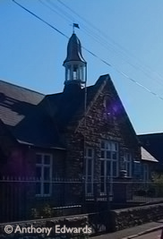

Primary Schools & Nursery's in Penzance and West Cornwall
Penzance and Penwith have a large number of primary schools, especially when you consider the low population density of the area. On average, Primary schools in the area perform far above the national average in S.A.T's and other national forms of testing. For those wishing to send their children to a religious school, there is a wide range of choices, especially in the Christian faith.
In Penzance
- First Steps - Day Nursery (01736 362604)
Penwith College, St Clare Street, Penzance
- Pensans School (01736 363627)
Madron Road, Penzance, Cornwall, TR20 8UH
www.pensansprimary.co.uk
- Lescudjack Infants School - Infant School (01736 363827)
Treneere Estate, Penzance
- St Mary's C of E - Primary School & Nursery (01736 363009)
Redinnick Place,
Penzance,
TR18 4HP
www.stmarys-cofe-pz.ik.org
- St Paul's C P Junior School - Junior School (01736 363627)
Madron Road, Penzance
- Alverton C P School - Primary School (01736 364087)
Alverton Estate, Penzance
- Heamoor C P School - Primary School (01736 364868)
Bosvenna Way, Boscathnoe Parc, Heamoor, Penzance
- St Mary's R C School - Primary School (01736 330005)
Peverell Road, Penzance
www.st-marys-catholic.eschools.co.uk
- The Bolitho School - Private School (01736 363271)
Polwithen, Penzance
Outside Penzance
- Cape Cornwall C P School - Primary School (01736 788478)
Cape Cornwall Road, St Just, Penzance
- Pendeen C P School - Primary School (01736 788583)
Pendeen, Penzance
- Sennen C P School - Primary School (01736 871392)
Sennen, Penzance
- St Levan C P School - Primary School (01736 810486)
The Bottoms, St Buryan, Penzance
- St Buryan C P Junior & Infant School - Junior and Infant School (01736 810480)
St Buryan, Penzance
- Mousehole C P School - Primary School (01736 731427)
Foxes Lane, Mousehole, Penzance
www.mouseholeschool.co.uk
- Newlyn C P Infant School - Infant School (01736 363509)
Carne Road, Newlyn, Penzance
www.newlynschool.ik.org
- Tolcarne C P School - Primary School (01736 363509)
School Lane, Newlyn, Penzance
- Madron C of E School - Primary School (01736 350056)
Madron, Penzance
- Gulval C P School - Primary School (01736 364747)
Gulval, Penzance
www.gulval.cornwall.sch.uk
- Ludgvan C. P. School & Day Nursery (01736 740408)
Ludgvan Primary School, Ludgvan, Penzance
www.ludgvan.cornwall.sch.uk
- Marazion Junior & Infant School - Junior and Infant School (01736 710618)
School Lane, Marazion, Penzance
- Germoe County Primary School - Primary School (01736 763310)
Germoe Lane, Germoe, Penzance
www.germoe.cornwall.sch.uk
- St Hilary C P School - Primary School (01736 763324)
Goldsithney, Penzance
- Porthreptor Playbox - Pre-school Playgroup (01736 798862)
12 Parc an Gonwyn, Carbis Bay, St Ives